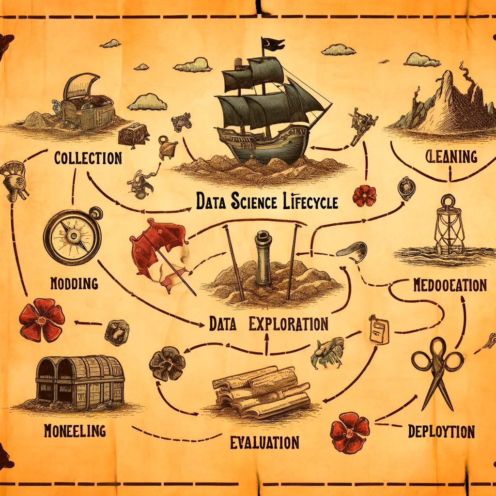
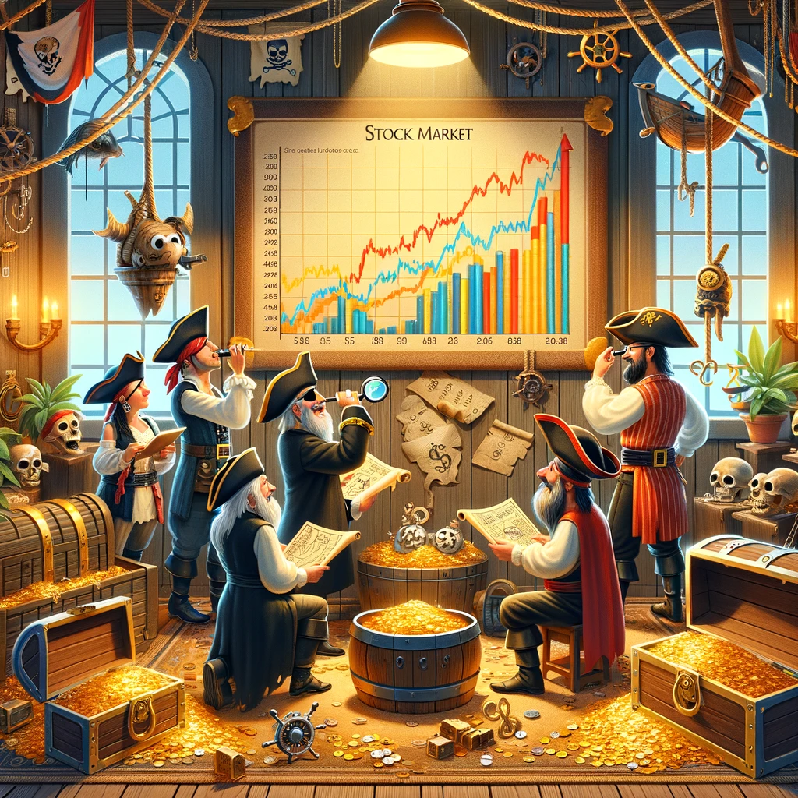
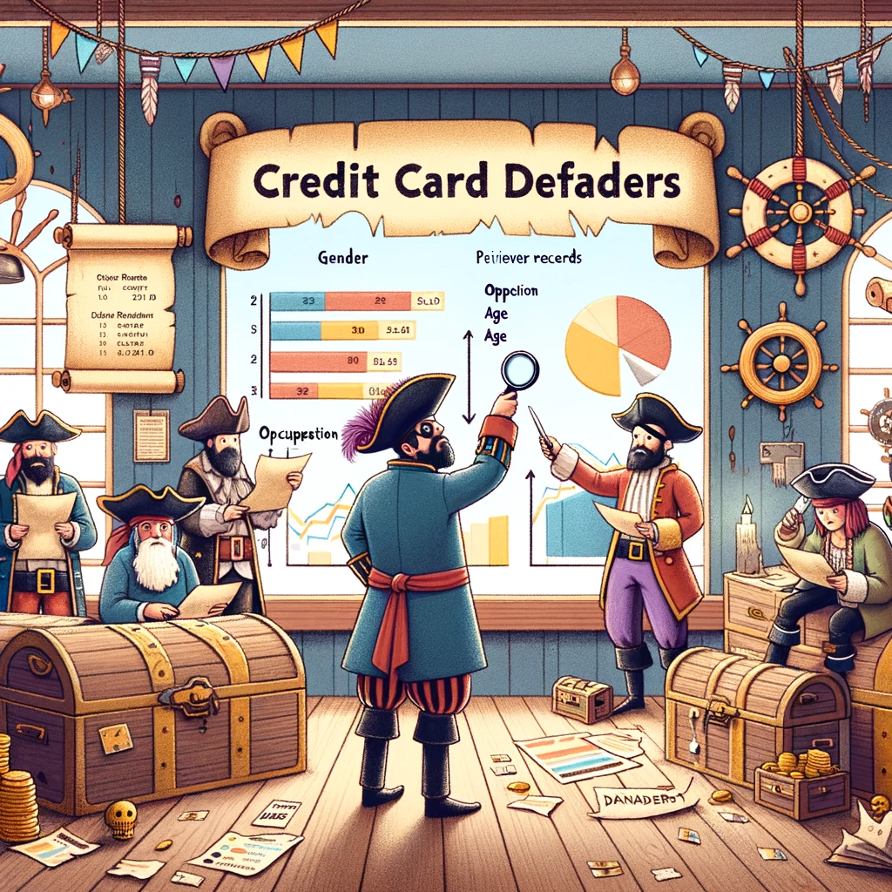

Tech-savvy Data Explorer navigating the realms of Machine Learning, Deep Learning, NLP, and Data Engineering. Data Engineer Intern at Allianz and student at Frankfurt School of Finance and Management

Scraped data from Skytrax, conducted sentiment analysis and topic modeling to analyze customer feedback
Utilized IMDb data and applied NLP techniques to train a model for generating movie recommendations
Used Tableau to visualize the IMDb dataset, creating a dynamic dashboard to unearth key findings and insights

Calculated investor investments for stocks and crypto by scraping data from Yahoo Trends, utilizing various fields for comprehensive analysis
Created Power BI dashboards for call center KPIs, customer churn analysis, and demographics. Developed gender-related visualizations and analyzed causes for slow executive gender balance.

Reduced misclassification of credit card defaulters by analyzing gender, occupation, age, and previous records through EDA, model fitting, and feature extraction. Focused on recall to minimize false negatives